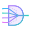

click anywhere, or press Esc, to close

Own your AI workforce. The capable local models your Apple Silicon already runs, directed by your frontier, no API bill, on your hardware. When a job needs a bigger brain, the same dispatches to the cloud endpoint you choose.
darkmux started as a lab for testing faster local AI on Apple Silicon. The belief that came out of it: a frontier model is a brilliant strategist you rent by the token. Burning those tokens on compaction, scaffolding, test runs, and structuring is paying rent for busy work, plus handing your data to someone else's cloud to do it. The Apple Silicon you already bought runs capable open-source models locally: no cloud account, no per-token meter, nothing leaving your disk. Many Mac owners don't make full use of the hardware they paid for; darkmux gives you the tools to use that silicon.
Every default in darkmux comes from a measured result, not a guess. The repo is the evidence locker; the writing is the narrative.
The obvious way to build a multi-agent tool was to copy the company: a boss model delegating to manager models delegating to workers, a pyramid of cloud agents renting tokens to talk to each other. But the org chart exists to route around human limits (span of control, careers, reporting lines), and none of those bind a model that spins up for one job and vanishes. So darkmux has no pyramid. One principal, you, leverages an orchestration harness (e.g. Claude Code) that assembles crews on demand for the mission and dissolves them when the work is done. The capable model shapes the work, the local crew does it, you decide what runs.
You shouldn't have to remember whether your fast bounded-task stack is loaded right now, or whether the deep-agentic profile got unloaded an hour ago when you ran a different test. darkmux makes the loadout an explicit, named thing that a dispatch loads on demand (the founding swap verb is gone; residency is managed for you now).
darkmux profile list — list named stacks (combinations of LMStudio models at specified context lengths)darkmux machine status — show what's loaded and which profile (if any) it matchesdarkmux profile scan — discover models in your LMStudio catalog not yet covered by any profiledarkmux serve runs a small HTTP daemon (default 127.0.0.1:8765) that exposes the flow records written by every dispatch and mission/phase transition. The observability viewer renders those records as one drillable view of your fleet: drill fleet → machine → subsystem, with the event stream as a log lens at any level. A demo with recorded sample data is published on this site. Wall-clock arcs on dispatch records; model field tells you which LMStudio model ran the work.
darkmux serve — start the daemon in a separate terminal tabdarkmux doctor — pre-flight checks including daemon: reachabledarkmux dispatch / mission launch review — emit flow records as they runFull walkthrough in the observability section of the user guide.
Every darkmux lab run writes a manifest, a trajectory, and per-turn timing under .darkmux/runs/<id>/, so wall-clock variance, compaction events, and per-profile behavior are inspectable after the fact. Not in your head. On disk.
lab run quick-q — single-turn smoke prompt against the active profilelab run long-agentic — the workload that exercises compactionlab run inspect <run> — turns, compactions, mode (fast/slow), noteslab tune long-agentic --runs 6 — bimodal cluster detection across N dispatcheslab run compare <A> <B> — diff two runs for variance / regressionWorkloads are pluggable via a WorkloadProvider trait. Two ship out of the box (prompt, coding-task); add your own without forking the repo. Full walkthrough in the lab section of the user guide.
On top of the profile and lab substrate, darkmux runs config-defined missions as a live task graph: named local-AI roles (coder, code-reviewer, scribe) with declared tool palettes and system prompts form a crew that works the mission's phases, every dispatch gated on operator sign-off, tracked as JSON the operator owns. The profile and lab CLI works standalone if that's all you want, but launching a mission and watching the graph is what darkmux is for.
darkmux dispatch coder "..." — invoke a named role; emits flow recordsdarkmux mission launch coder-phase — the automated dispatch loop: worktree, coder, QA review, stop at the operator sign-off gate; the frontier ships the git work by hand, then darkmux mission finalize <id> closes it outdarkmux mission launch review — the review funnel (bundle → probe → dedup → judge → verify → synthesis) against the current branch's diffdarkmux mission launch/finalize/abort/pause/resume — drive mission lifecycle state (the mission graph derives phase status)darkmux mission add-phase --after <s> — insert scope mid-mission without restructuringFull walkthrough in the missions section of the user guide.
Prefer source? cargo install --git https://github.com/kstrat2001/darkmux works too. Then edit ~/.darkmux/profiles.json to point at your downloaded LMStudio models. The getting-started page of the user guide walks through this end-to-end, including verifying with doctor and launching your first mission.
CLAUDE.md, and other frontier configs will cause more harm than good. Configure to your own strategy and goals. See issue #112 for the architectural reasoning.